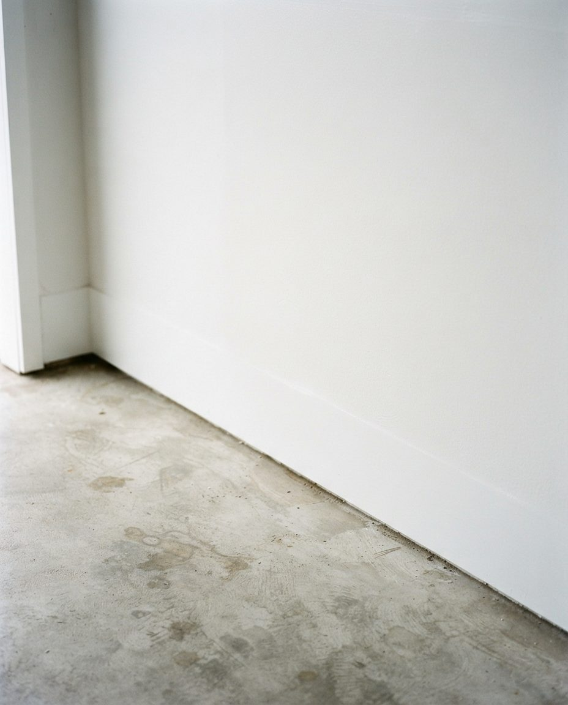
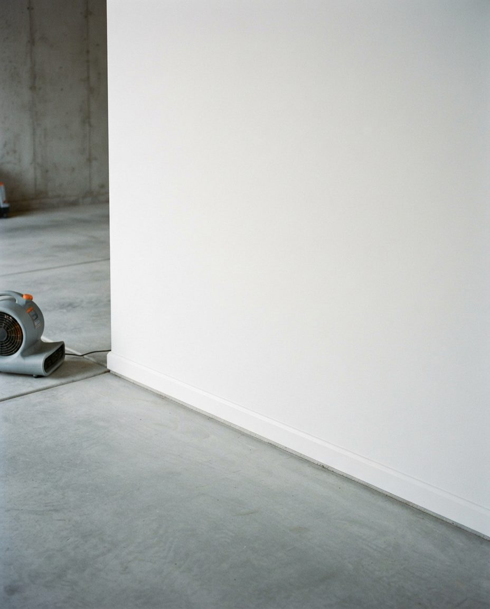
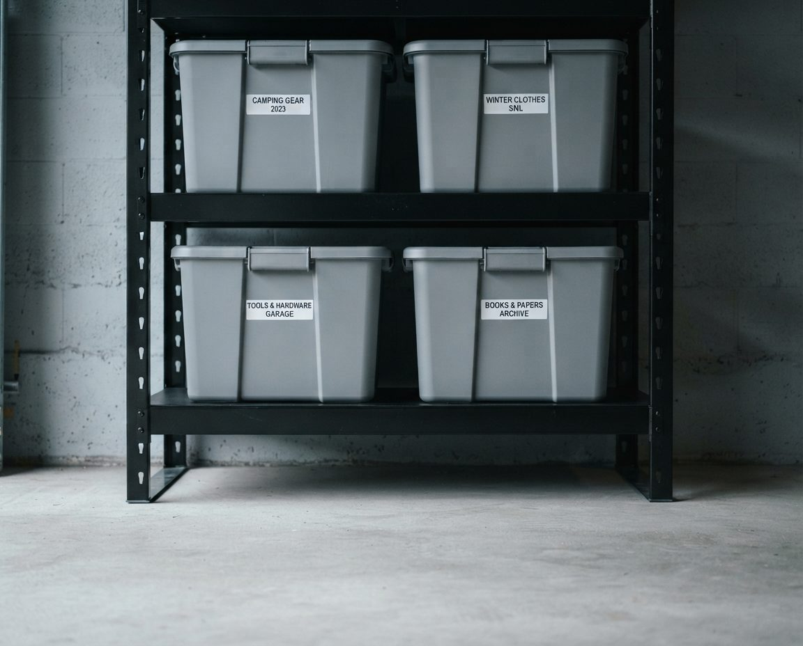

A North Vancouver garage is usually cut into a hillside, shares air with the house above it, and holds four bikes, two sets of skis and a paddleboard. We design storage for that garage: gear walls built around Fromme, Seymour and Deep Cove, heavy systems kept off the wet uphill wall, and tandem layouts that pass a Lonsdale strata bylaw check.
"North Vancouver" is two municipalities. The City of North Vancouver is small and dense: 58,120 people on 11.83 square kilometres at the 2021 census, most of them in the high-rise and low-rise strata buildings of Lower and Central Lonsdale, around Lonsdale Quay and the Shipyards. The District of North Vancouver wraps around it on three sides and runs from Capilano to Deep Cove, with 88,168 people at the same census, spread across Edgemont Village, Upper Lonsdale, Lynn Valley, Parkgate and the Seymour area. Most District homes date from after 1950, from mid-sized family bungalows up to large houses on the upper slopes.
That split decides the job. In the City, the garage is often a strata tandem stall or a detached lane garage behind an older Lonsdale house, and the constraint is floor area and bylaws. In the District, the garage is usually attached, frequently tucked under the house on a slope, and the constraint is gear volume and water. We plan the two very differently, so the first question at every assessment is which side of the municipal line you are on.
Across Lynn Valley, Upper Lonsdale, Capilano and Blueridge, a large share of homes sit on a slope with the garage built into the lower storey. The back or side wall of that garage is a retaining wall with saturated North Shore soil behind it. It is the coldest, darkest wall in the room, and it is where water tends to find the joint between wall and slab.
The standard catalogue layout puts the biggest shelving unit on the back wall, because it is the wall you face when you drive in. In a tuck-under garage that is the wrong wall. Loading it with bins pressed flat against the concrete traps moisture, hides the first signs of water entry, and puts the heaviest anchors into the wall most likely to crack. Our rule on the North Shore is simple: heavy anchored systems go on the side walls, and the uphill wall gets either nothing, or light open shelving standing on its own feet with a clear air gap behind it.


Keep the wet wall visibleThis Metro Vancouver garage shows the wall-slab joint we check first on a hillside lot. Storage stays off it so you can see water coming before it reaches your belongings.
The second tuck-under issue is air. Because the garage sits under the living space, anything that goes musty in the garage ends up in the house. That changes what we store where: no fabric, paper or cardboard in the lower storey at all, fuel and solvents in a closed metal cabinet away from the door to the house, and the wet-gear drying spot placed near the big door where air moves, never beside the interior entry.
Environment Canada's 1981 to 2010 normals put yearly precipitation at the Second Narrows, down near the water, at about 1,831 mm. The older station on Redonda Drive, higher up the slope, recorded about 2,477 mm a year over 1971 to 2000. The difference is elevation: Pacific air is pushed up the North Shore mountains and drops more rain the higher it goes. A garage in upper Lynn Valley or Canyon Heights lives in noticeably wetter air than a stall at Lonsdale Quay.

Storage has to be built for that. Cardboard on a North Shore slab lasts one winter before it softens and starts growing mildew, so everything long-term moves into rigid lidded bins. The lowest shelf starts high enough that a mop and a squeegee reach under it. Metal tools go on an interior-facing wall or into drawers with desiccant rather than hanging against a cold exterior wall where condensation forms overnight. If the garage already has visible mould or a white mineral bloom on the concrete, we clean that up before any storage is installed. Our guide to mould in a Vancouver garage covers why it happens and what to fix first.
The North Shore Mountain Bike Association maintains trail networks on Mount Fromme, Mount Seymour and Cypress, all a short drive from most District homes. Grouse and Seymour run lift-served skiing in winter. Deep Cove sits at the mouth of Indian Arm and is one of the region's busiest spots for kayaks and paddleboards. Plenty of households here do all three, and the garage carries the equipment for every season at once.

We design the gear wall by activity and by season, in this order:
The seasonal swap is part of the design. In November, the ski wall moves to eye level and the paddle gear goes up. In May it flips back. Set up properly, the swap takes one person about fifteen minutes. If you want to see how we handle damp gear at a Vancouver-wide level, our garage storage solutions for Vancouver page compares the hardware options.
Lower and Central Lonsdale are among the densest neighbourhoods on the North Shore, and a lot of the newer townhouse stock there comes with a tandem garage: two parking spaces nose to tail, one car wide. The layout fails in a predictable way. Bins and bikes creep into the back half, the second car moves to the street, and the strata gets a complaint about a stall used as storage.


Two stalls, one car wideThis Metro Vancouver tandem shows the fix we use in Lonsdale townhouses: shallow shelving along one side wall, bikes vertical, seasonal bins overhead, and the whole floor length kept parkable.
Before we design in a strata building, we read the bylaws and rules. Many restrict storage that blocks a parking stall, drilling into common-property walls, or overhead racks in shared parkades. The BC Fire Code limits how much flammable liquid can be kept in a residential garage. When something needs strata council approval, such as an EV charger or a system anchored to a shared wall, we tell you before the job is booked. For the older detached lane garages behind Lonsdale houses, many of them pre-war with no power, our laneway garage clearing service is often the first step.
Every garage gets a written zone map, and every item gets one home. The zones are the same across North Vancouver; the proportions change. A Blueridge family of five with three riders needs a big gear zone and a small workshop. A downsizing couple in Edgemont might need the reverse.

Rigid bins, two labels eachIn North Shore air, sealed bins replace cardboard for anything kept longer than a season, and a label on the front and the side means nobody climbs a ladder to find the camping stove.
North Shore Emergency Management plans for emergencies on behalf of the City of North Vancouver, the District of North Vancouver and West Vancouver, and it recommends a grab-and-go bag for every household member, pets included, holding supplies such as water, food, medications, a radio, a flashlight and batteries, a first-aid kit, and copies of important documents. In a lot of homes those supplies end up scattered, and the garage is where the bulky parts, like spare water and the household kit, end up forgotten behind the Christmas boxes.
We build it a defined spot: a low, anchored shelf near the man door, in sealed bins, with nothing heavy stored above it that could fall across the path in a shake. Tall shelving units elsewhere in the garage get anchored to studs as a matter of course, which matters more on the coast than it does in our Alberta work. It adds nothing to the price and it is one of the most useful things in the zone map.
GarageScape started in Alberta, where the same zone method runs into the opposite climate: dry air, road salt and hard freezes instead of year-round damp. The garage storage solutions we build in Calgary and the mountain-town layouts in our Canmore garage organization work handle similar gear loads with different moisture rules. Closer to home, our Burnaby garage organization page covers the hillside doubles and tandems on the other side of the Second Narrows.
Service pricing below. Storage hardware is quoted separately at cost and specified to a budget you set: typically $300 to $900 for a single or tandem garage, $600 to $2,500 for a full double.
We cover the City and the District. Here is roughly what we expect to find in each part of the North Shore.
Lower Lonsdale and Central Lonsdale are mostly strata buildings, with townhouse tandems and parkade storage lockers, plus a stock of older houses with detached lane garages. Moodyville, to the east, has seen newer townhouse development with attached single and tandem garages.
Lynn Valley, Upper Lonsdale and Canyon Heights are hillside single-family areas where tuck-under doubles are common and rainfall is highest. Edgemont Village and Capilano mix older bungalows with larger rebuilds. Blueridge, Seymour and Parkgate tend toward attached doubles with heavy family gear loads. Deep Cove brings tight lots, steep driveways and a lot of paddle equipment.
If the garage needs a deep clean, moss removal or a mould treatment before anything else, start with garage cleaning in North Vancouver. Across the Lions Gate, see garage cleaning in West Vancouver, or the full list on our Metro Vancouver services hub.
Every job begins with a free on-site assessment. We measure the garage, mark the parking envelope, check which walls can carry load and which one is holding back the hill, look for moisture problems that would undermine a new system, read your strata bylaws if they apply, and go through the gear you own and when you use it. You get a written zone plan and a fixed price before anything is booked.
Design and installation starts at $549 for a single-car or tandem garage, $899 for a standard double, and $1,800 for a full transformation that bundles decluttering, a deep clean and the organization build. Hardware is quoted separately at cost: typically $300 to $900 for a single or tandem and $600 to $2,500 for a full double.
Usually not directly against it. That wall holds back wet ground and is where water tends to enter at the wall-slab joint. We keep it for light freestanding shelving with an air gap, or leave it clear, and put heavy anchored systems on the side walls. Active water entry or mould gets dealt with first.
Off the slab. Daily bikes go on vertical hooks spaced for wide modern bars, with a drip zone below; spares go on ceiling hoists. A wash and tool spot near the door keeps mud from Fromme or Seymour in one corner.
Overhead on padded racks, once dry. We set up a short-term drying spot near the big door for boards coming back from Deep Cove, and a long-term overhead spot above the car. Wetsuits and PFDs hang; they never get folded into a bin.
Often. Many strata bylaws restrict storage that blocks a stall or drilling into common property, and the BC Fire Code limits flammable liquids in residential garages. We read your bylaws first and flag anything that needs council approval.
North Shore Emergency Management recommends a grab-and-go bag for every household member, including pets. The garage is a sensible home for the bulkier household kit and spare water, on a low shelf by the man door with nothing heavy above it. We add that shelf to the zone map on request.
All of the City and District: Lower, Central and Upper Lonsdale, Moodyville, Lynn Valley, Edgemont Village, Capilano, Canyon Heights, Blueridge, Seymour, Parkgate and Deep Cove, plus West Vancouver and the rest of Metro Vancouver.
No. The services can be booked separately. North Shore garages tend to carry years of outgrown bikes, old ski boots and retired camping kit, so many clients bundle a declutter because a smaller gear load makes the build simpler and cheaper.
Free on-site assessment. Written zone plan and fixed price before we start. Built for hillside garages, Lonsdale tandems and a lot of gear.
Serving the City and District of North Vancouver: Lonsdale, Moodyville, Lynn Valley, Edgemont, Capilano, Canyon Heights, Blueridge, Seymour, Parkgate and Deep Cove, plus West Vancouver.